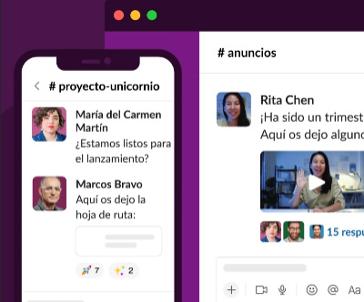
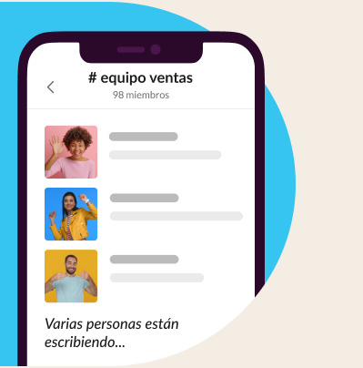
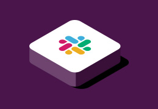

Un buen trabajo en equipo comienza con una sede digital
Reunir a todos tus companeros, herramientas y comunicacion en un mismo lugar te permitira trabajar de manera mas rapida y eficiente que nunca.
REGISTRARSE CON CORREO
REGISTRARSE CON GOOGLE

EMPRESAS DE TODO EL MUNDO YA CONFIAN EN SLACK

Reune a tu equipo
Los canales son el corazon de Slack. Son espacios organizados para todo el mundo que contiene todo lo necesario para trabajar. Los canales premiten conectarse entre departamentos, oficinas, zonas horarias e incluso con otras empresas.
Slack te otorga la flexibilidad para trabajar cuando, donde y como tu quieras. Puedes chatear, enviar clops de audio y video o unirte a una junta para discutir asuntos en directo.
Agiliza el trabajo con todas tus herramientas en un mismo lugar
Conectar tus otras aplicaciones de trabajo con Slack te permite ahorrar tiempo al no tener que cambiar entre pestanas. Ademas, con herramientas eficaces como el Creador de flujos de trabajo, puedes automatizar tareas rutinarias.
Slack se adapta de forma segura para garantizar la colaboracion en las empresas mas importantes del mundo.
CONOCE SLACK PARA EMPRESAS
HABLAR CON EL EQUIPO DE VENTAS
85%
de usuarios afirma que Slack ha mejorado la comunicacion *
86%
creen que su capacidad para trabajar a distancia ha mejorado *
88%
se sienten mas conectados con sus equipos *
"Hemos podido crear una amplia red virtual de empleados que se pueden comunicar como si estuvieran juntos. Hubo bastantes problemas sobre donde trabajamos, pero no sobre el como".
* Promedio ponderado. Basado en una encuesta de 2707 respuestas de usuarios semanales de Slack en Estados Unidos, Reino Unido, Australia y Canada, con un margen de error de +-2 % al 95 % CI (diciembre de 2021).
Explora con mas profundidad una nueva forma de trabajar

Funciones
Echa en vistazo a todo lo que puede hacer la plataforma